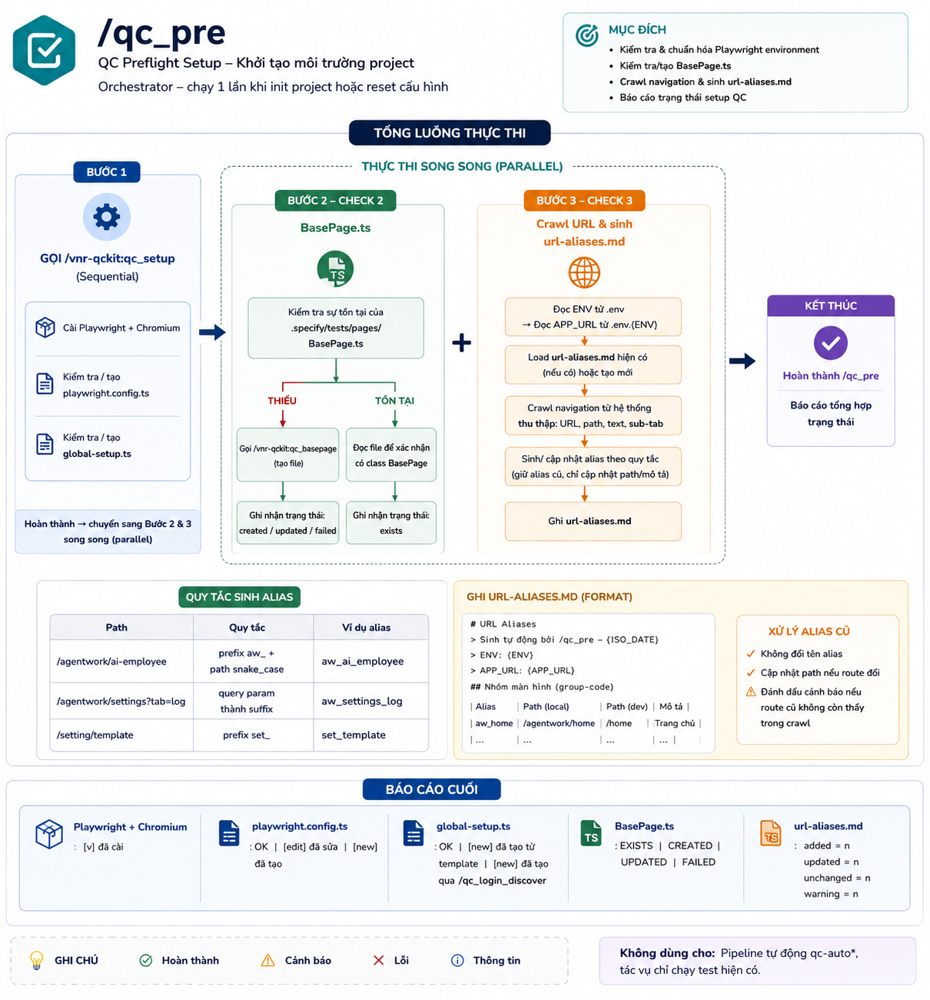
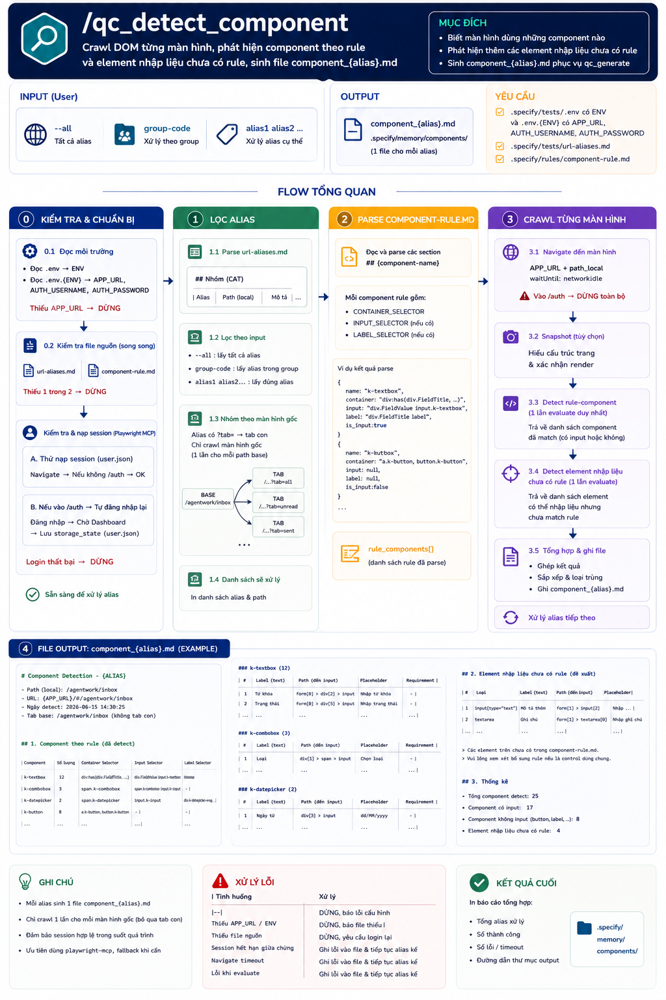
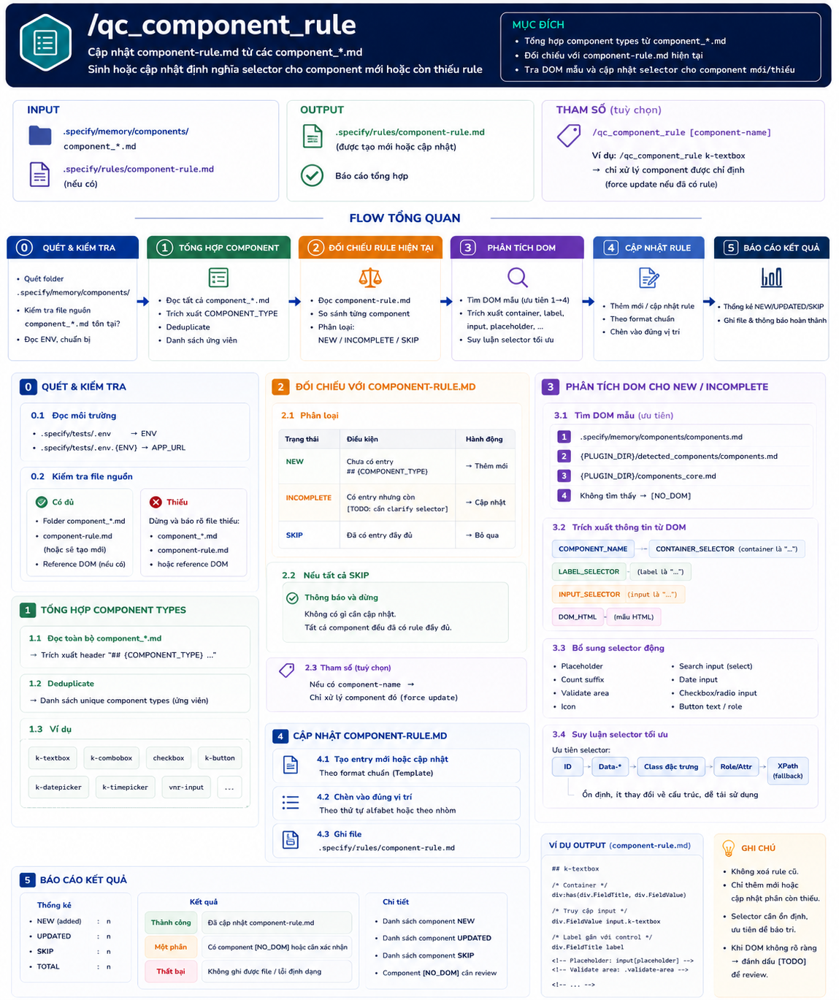
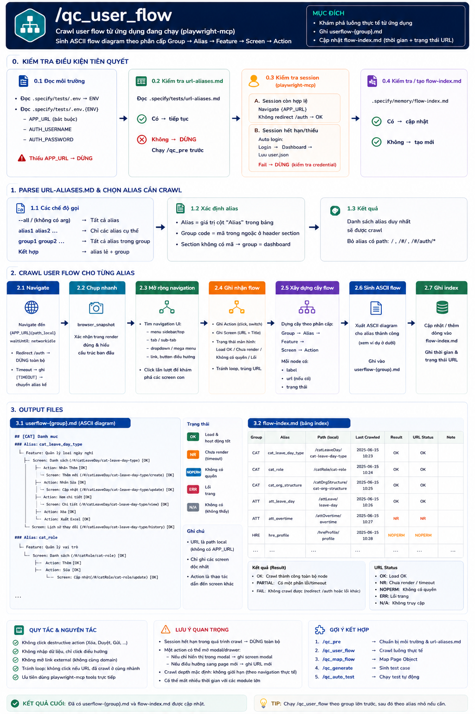
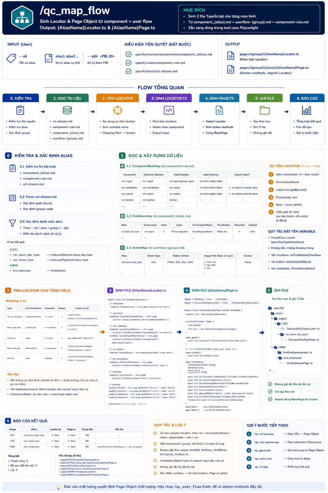
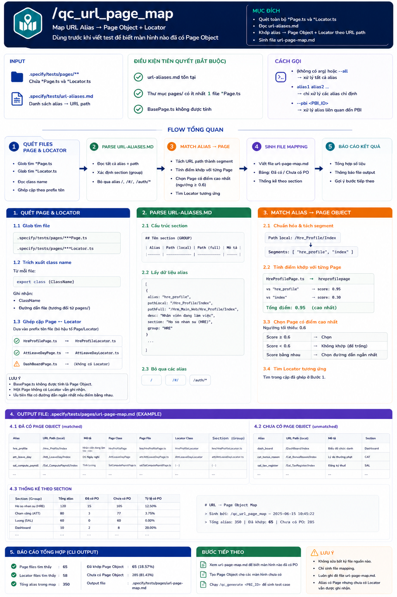
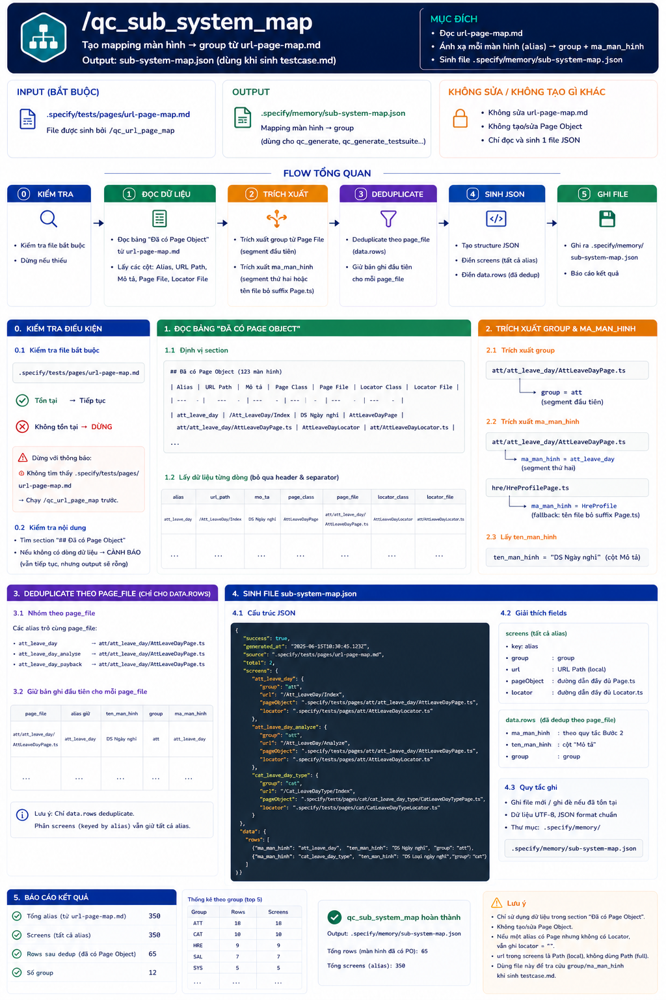
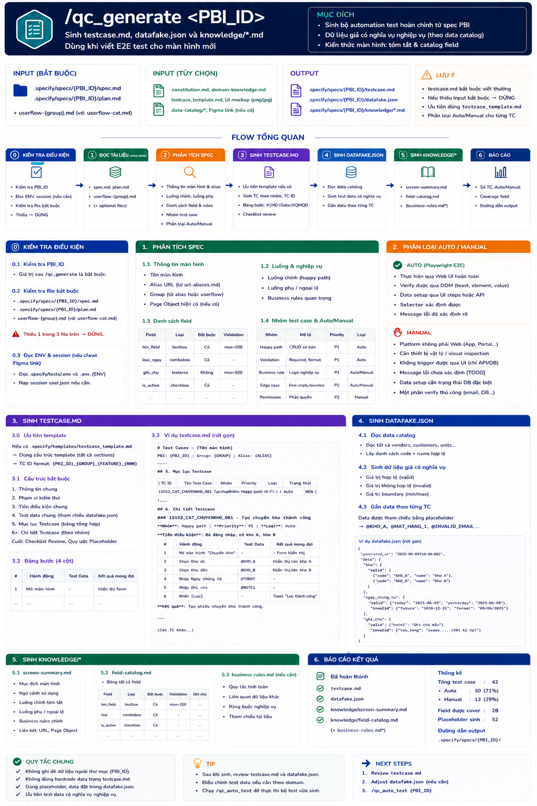
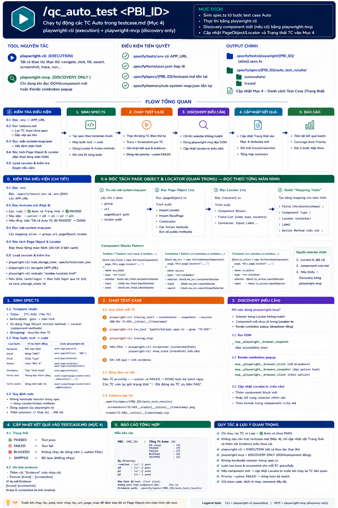
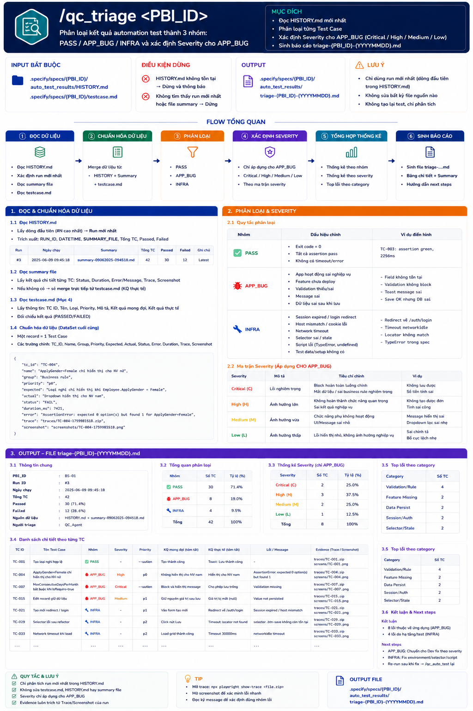

1
Khởi tạo
Chuẩn hóa Playwright, BasePage, session và danh sách URL.
qc_preDashboard tổng hợp toàn bộ quy trình QCKit từ khởi tạo môi trường, khám phá ứng dụng, mapping Page Object, sinh test case, chạy automation đến triage kết quả.
Luồng được thực hiện tuần tự từ trái sang phải. Sau khi triage, nếu còn lỗi hoặc cần cập nhật selector, hệ thống quay lại giai đoạn chạy test và phân tích kết quả.
Chuẩn hóa Playwright, BasePage, session và danh sách URL.
qc_preCrawl DOM, component, hành động và user flow thực tế.
qc_detect_componentChuyển hiểu biết UI thành Locator, Page Object và system map.
qc_map_flowSinh testcase, dữ liệu giả và tài liệu knowledge cho từng PBI.
qc_generateSinh spec.ts, thực thi, trace, screenshot và cập nhật trạng thái.
qc_auto_testPhân loại PASS, APP_BUG, INFRA và xác định severity.
qc_triageqc_auto_test → phân tích lại bằng qc_triage.
Mỗi giai đoạn bên dưới thể hiện mục tiêu, input, output và vai trò kiểm soát của QC.
Luồng: qc_pre gọi qc_setup, kiểm tra qc_basepage, sau đó crawl navigation để sinh aliases.
Luồng: qc_detect_component → qc_component_rule → qc_user_flow.
Luồng: qc_map_flow → qc_url_page_map → qc_sub-system-map.
Luồng: qc_generate <PBI_ID> đọc spec, plan và user flow để sinh toàn bộ bộ test.
Luồng: qc_auto_test <PBI_ID> sinh spec.ts, chạy theo thứ tự ưu tiên và ghi bằng chứng.
Luồng: qc_triage <PBI_ID> đọc run gần nhất, phân loại và xác định severity.
Có thể tìm kiếm theo tên skill, input, output hoặc lọc theo nhóm chức năng. Nhấp vào hình thumbnail để xem ảnh mô tả đầy đủ.
| Skill | Hình mô tả | Nhóm | Mục đích | Input chính | Output chính | Vai trò QC |
|---|---|---|---|---|---|---|
qc_pre |
 🔍 click để xem |
Orchestrator | Khởi tạo toàn bộ project QC. | .env, APP_URL, url-aliases.md cũ | Config, BasePage.ts, url-aliases.md | Xác nhận phạm vi màn hình và môi trường. |
qc_setup |
— | Internal | Cài Playwright, Chromium và tạo config. | .env, Chromium bundle | playwright.config.ts, global-setup.ts, tsconfig.json | Kiểm tra login, browser và cấu hình chạy. |
qc_basepage |
— | Internal | Tạo lớp common methods cho Page Object. | Template BasePage, APP_URL | BasePage.ts | Xác nhận hành vi chung đúng với UI. |
qc_detect_component |
 🔍 click để xem |
Khám phá | Crawl DOM và phát hiện component. | url-aliases.md, component-rule.md, session | component_{alias}.md | Review field, label, required, unknown input. |
qc_component_rule |
 🔍 click để xem |
Khám phá | Chuẩn hóa selector rule cho component. | component_*.md, DOM references | component-rule.md | Đảm bảo selector ổn định và có ngữ nghĩa. |
qc_user_flow |
 🔍 click để xem |
Khám phá | Crawl action, form, tab và user flow. | url-aliases.md, session, app | userflow-{group}.md, flow-index.md | Xác nhận happy path, phụ và validation. |
qc_map_flow |
 🔍 click để xem |
Mapping | Sinh Locator.ts và Page.ts. | component, rule, userflow | Locator.ts, Page.ts, locator-map.md | Review tên action và locator tái sử dụng. |
qc_url_page_map |
 🔍 click để xem |
Mapping | Khớp alias với Page Object. | url-aliases.md, Page/Locator files | url-page-map.md | Kiểm tra alias chưa khớp hoặc khớp sai. |
qc_sub-system-map |
 🔍 click để xem |
Mapping | Sinh mapping màn hình → group. | url-page-map.md | sub-system-map.json | Xác nhận đúng group và màn hình của PBI. |
qc_generate |
 🔍 click để xem |
Sinh test | Sinh test case và dữ liệu test theo PBI. | spec.md, plan.md, userflow, domain knowledge | testcase.md, datafake.json, knowledge/*.md | Review coverage, priority, Auto/Manual. |
qc_auto_test |
 🔍 click để xem |
Thực thi | Sinh spec.ts, chạy test, lưu trace và history. | testcase, Page Object, session, datafake | spec.ts, trace, screenshot, HISTORY.md | Xác minh precondition, assertion và bằng chứng. |
qc_triage |
 🔍 click để xem |
Triage | Phân loại kết quả và severity. | HISTORY.md, run-summary.md, testcase.md | triage report | Quyết định PASS / APP_BUG / INFRA và action. |
Spec, plan, URL, session, dữ liệu test và phạm vi màn hình phải đủ và đúng trước khi automation chạy.
QC quyết định nhóm test, mức ưu tiên, TC nào Auto hay Manual và tiêu chí nào là đủ để chấp nhận PBI.
QC đánh giá assertion, trace, screenshot, session và data chaining để tránh false positive hoặc false negative.
QCKit hỗ trợ tổng hợp bằng chứng, nhưng QC là người quyết định lỗi ứng dụng, lỗi hạ tầng và severity.